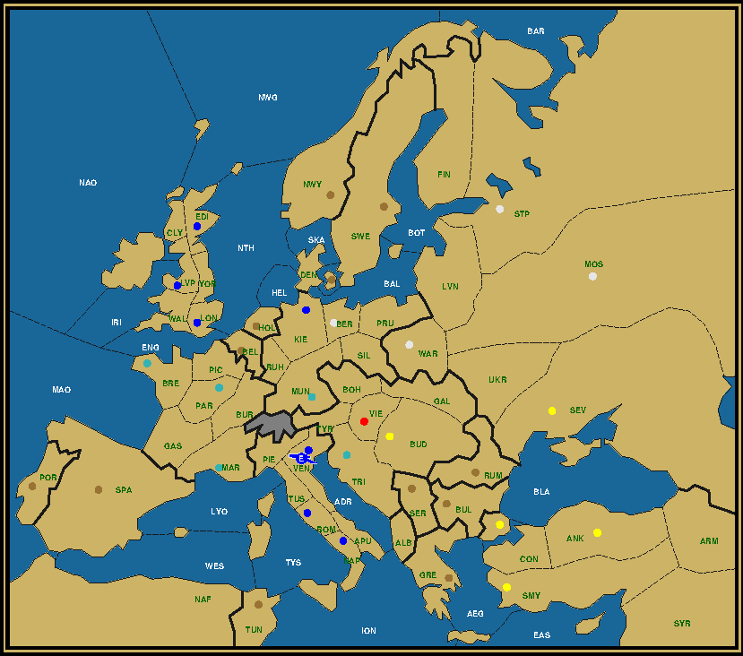
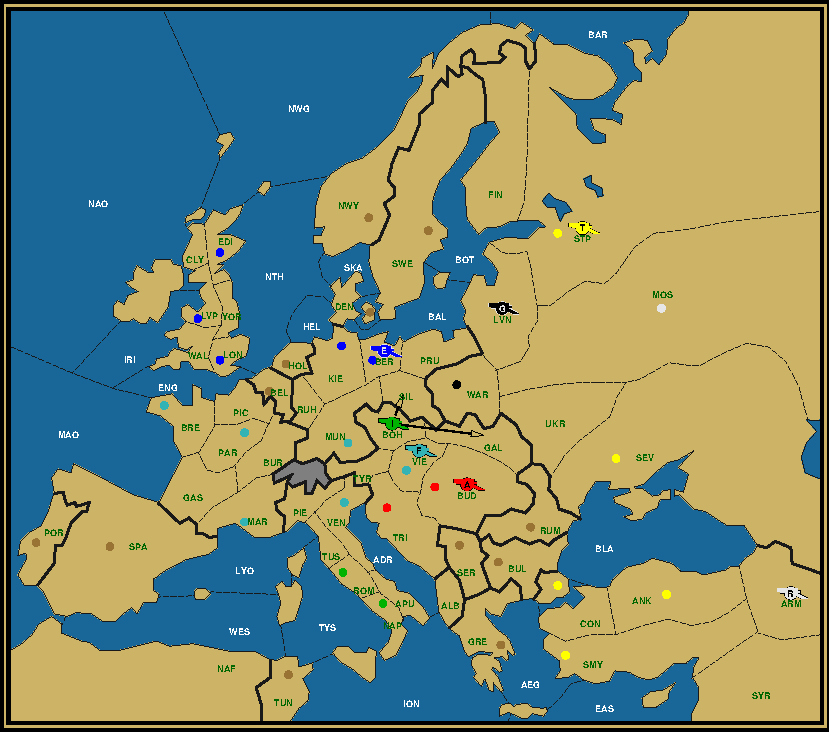

Last Man Standing is a puzzle on the Diplomacy board, whereby the whole board gets reduced to a single unit. This unit must reach its final destination in a mere four game years, without any power capturing any neutral centers and with all powers still possessing at least one unit at the end of the second year. Your goal is to reconstruct the complete game history from the map given. For more details, read the LMS Roll Call. The two destinations this time are Venice and Trieste, (in)famous for being the only two home centers from different powers touching each other. It's the cause of much strife between Italy and Austria, but for me these two cities also evoke something else. They are the start and end point for the Sherlock Holmes story "The Last Theorem of Suwat", a pivotal story in the universe of the Zine's SHCD in which the old Sultan of Suwat dies and gets succeeded by his Diplomacy-averse son. It's one of the rare cases where the story at times seems to eclipse the puzzle, a more prosaic rendition that comes closer to the short stories of A. C. Doyle. Surely worth a re-read. Mission: Death in VeniceThe title is borrowed from a famous American movie (and German novel) on gay, platonic love between an old man and a pretty youth. At the same time it recalls the opening of "The Last Theorem of Suwat", where the Sultan is found dead (murdered?) in a palace in Venice.

Army London to Venice, After Winter 1904 Austria (0/1) Vie England (1/7) A Ven / Edi Kie Lon Lvp Nap Rom Ven France (0/5) Bre Mar Mun Par Tri Russia (0/4) Ber Mos Stp War Turkey (0/5) Ank Bud Con Sev Smy This puzzle sends Holmes, in the form of an army from London, to the scene of the crime, Venice. But, you will say, London doesn't start with an army, it starts with a fleet. Remarkable indeed. You will need to find a way to build that army and convoy it towards Venice within the allotted four year game span. Mission: Fugitive in TriesteThe title is taken from a rather obscure Italian movie on an Italian pilot hiding from the Allies, because he accidentally attacked a hospital ship during WWII. More importantly it recalls the main plotline in the solution to "The Last Theorem of Suwat", the flight of the Vizier of Suwat towards (and through) Trieste. The Port of Suwat might enjoy some form of independence, but it still has to pay tribute to the Osman-Turkish Sultan. Hence the choice of a Turkish fleet departing from the port of Ankara (which may or may not be close to Suwat) to go and pick up the Vizier. Fleet Ankara to Trieste, After Winter 1904 Austria (0/1) Vie England (0/3) Edi Lon Lvp France (0/5) Bre Mar Mun Nap Par Germany (0/3) Kie Rom Ven Russia (0/6) Ber Bud Mos Sev Stp War Turkey (1/4) F Tri / Ank Con Smy Tri Historically Trieste has belonged to the Austrian Habsburg Empire since at least the 14th century (apart from some short-lived annexations by Venice) until the end of WWI, when it was transferred to Italy as a reward for their participation on the side of the victorious Entente. It remained Italian even after WWII, despite Yugoslavian insistence to relinquish as a reward for their successful resistance during the war. Italy conceded most of the Istrian peninsula with the sole exception of the city of Trieste and a small coastal zone connecting Trieste over land with the rest of Italy. That Italian tenacity is also honored in this solution. Austria, which has Trieste as a home center, has no significant role in killing off (through dislodgement) the units of the other powers. Instead this role is taken up almost exclusively by Italy, who becomes the sole sniper country left after the first year. Reiterating from the LMS Roll Call, a sniper country is a country that loses its units not through dislodgement, but through Winter disbands due to owning less centers on the board than units. In many solutions there will be two or three until late in the game, but not here. To accomplish this Italy might need to temporarily expand its unit size. Debriefing: The Deluge — Army Constantinople to WarsawArmy Constantinople to Warsaw, After Winter 1904 If most LMS puzzles may seem like a long slug, because you need to reconstruct 8 seasons (or 12 if you count the Winters separately) from just one after season image, this one should be a breeze. Not only is there the challenge, only seven units left after 1902, all armies, we also get a very easy riddle. Let's recall the straight version:
The stated reason for doing so is to make sure that the position after the second year is unique. Fair enough, but it makes things super easy. Except perhaps for a thing or two. But let's not worry too much and dive straight into it. On the final map we notice Turkey has retained all its home centers and has conquered the whole of Russia. As any LMS veteran knows, the first strategy to consider when the Turks retain all their home centers, is the Black Sea sweep, taking care of two Turkish units with the aid of the two Russian units starting in Sev and Mos. The third unit, one of the two Turkish armies (in this case Constantinople) moves to or gets convoyed to Sevastopol in the first year and continues on from there. Since there are four game years it can conceivably conquer one Russian home center every year, occupying Warsaw last. That only leaves the question in which order Moscow and St. Petersburg are taken. To answer that, let's recall the riddle. Vienna is occupied by a different power every year. At the end of the third year that power is Austria. Vienna is also two spaces away from Warsaw. There's no way to reduce the board to one unit if more than one unit is two spaces away from the final destination going into the final year if that destination is inland. Thus army Constantinople must first move to St. Petersburg from Sevastopol and then move one back to Moscow, so that it's adjacent to Warsaw at the start of 1904. Let's move on to England and the North. England has taken Kiel and Berlin, which is usually accomplished through a first year convoy of army Liverpool straight into Kiel, continuing to Berlin the year after (not in the third year, again because of Vienna and the two space distance to Warsaw). All the Northern fleets kill each other off in or around the North Sea. Since both Russia and Germany are snipers in this game, both powers being eliminated by the end, the two sniper fleets are Kiel and St. Petersburg. Since no fleet remains after 1902 and given that army Liverpool gets convoyed in the first year, these two fleets can only cull two other fleets, Brest and London. Fleet Edinburgh will need to travel to the North Coast of St. Petersburg, where it gets dislodged by army Constantinople with the assistance of some unknown unit in Livonia. France owns Munich and Venice and is in Vienna at the end of 1902. Since each power has just one army left at that point in time, this means that Venice and Munich were both taken the first year. Which of the two French armies continues to Vienna is less clear, but we'll figure that out by considering the movement of the Italian and Austrian armies. Italy needs to lose its fleet Naples in the first half of the game. It could do this by sending the fleet to Venice and get it dislodged there, but we know that there's a French army there at the end of the first year and none there at the end of the second. Since that's the case Italy will need to be in a position to disband in Winter by losing Venice , and not taking any other centers or getting any of its armies attacked and dislodged in the first year. We'll simply send Venice and Rome up into the alleyway, one to Bohemia, the other to Tyrolia. That puts them in the middle of the pack, where it will be easier to pick them off. Austria is likewise going to disband its fleet by the loss of Vienna to Germany in 1901, as we know from the riddle. It will later get recovered. But unlike Italy, Austria can lose more than one home center in the first year. In fact it can lose all of them, if not for the fact that Italy is not taking any centers in this game and army Munich is headed for Vienna. Therefore Trieste is safe. But what about Budapest? This depends on whether Russia needs another center. We know that Sevastopol will be captured by Turkey in the first year. We also know that Russia needs at least three centers to cover for its sniper operations in the Black Sea and the North Sea. On the surface it doesn't need a fourth center, except that it would immediately eliminate a second Austrian unit. Indeed, because it needs to be able to disband its fleet Trieste, Austria cannot allow one of its armies to be dislodged in Fall 1901. But losing a second center is completely okay. Furthermore it allows to keep another Russian sniper unit on the board, facilitating the task at hand even further. The only downside is that that center needs to be retaken by Austria. But that can be arranged, since we still have one Austrian army in the race, of which we only know that it needs to capture Vienna in 1903. It can and should retake Budapest in 1902, making this all the more a true resurgence. Down to one center in 1901, back to its original three by 1903. The last power to consider is Germany. We know already a lot about this power. Its fleet in Kiel is in the Bight, orchestrating the convoy and subsequent fleet destruction in the North Sea in the first two years before being disbanded in the Winter that year. Its army Munich takes Vienna first and is clubbed to death the next year. You might say that this dislodgement is unnecessary, an excessive use of force, because Germany is already losing centers in order to be able to disband the fleet and therefore can only allow another unit to be dislodged if it at the same time loses another center. In which case it would be less resource intensive to simply move that army to a space without a supply center, such as Albania. But hey, the riddle demands it, and we already know that there will be an Austrian army in Budapest and a French army moving to Vienna, now a German center. So why not use those two to effectuate the dislodgement? All well and said, but if Germany is losing two units in 1902, its third unit, army Berlin, must necessarily stay alive, as all powers still have a unit in play at the end of that year. And that despite the fact that two of its home centers, Kiel and Munich, are lost in the first year. Vienna accounts for one of these losses, but for the second one we only have one choice: Warsaw, the final destination. Army Berlin can take it itself, then move on to where? To Livonia of course. Remember we still needed some unit there to help army Constantinople dislodge the English fleet in St. Petersburg. By the way, it was a good thing that army Warsaw was sent to Budapest, otherwise Russia would have lost one too many centers. What once looked optional now became essential. Alright, let's see how many of the surviving armies at the end of 1902 we've been able to identify. There's Turkey with army Constantinople in St. Petersburg, Germany with army Berlin in Livonia, Austria with army Vienna or Budapest in Budapest, France with army Marseilles or Paris in Vienna, and England with army Liverpool in Berlin. Russia has only one army in play in the second year, which is standing in Armenia. That leaves us with Italy. Italy sent its two armies into the corridor between Germany and Austria. Army Venice is in Bohemia, army Rome in Tyrolia. We need to dislodge one French and one Italian army in 1902. The Austrian army is of no use, because it must first move back to Budapest and then support the French army into Vienna to dislodge the German there. The German army itself however is available in Spring 1902 to help dislodge one Italian army, while the English army in Kiel can do the same to the French army in Munich. Therefore it's the Italian army in Tyrolia that gets dislodged by the French army coming up from Venice. The other Italian army, originally from Venice, survives. But we still don't know exactly where that Italian army is located. Given that it's involved in the dislodgement of the French army in Munich, it will either be in Munich if it moved or still in Bohemia if it supported at the end of Spring. From there it should move to a space without a supply center, as any center captured now would still be Italian at the end of the game and we know that Italy only kept its two home centers of Naples and Rome. There are unfortunately a multitude of non-supply centers around Munich and Bohemia, including Bohemia itself. It's pretty safe to say that anything West of Munich can be excluded because that would be too far from Warsaw. In fact the distance to Warsaw is a great determinator. The closer by, the easier it will be to set up the sort of dislodgement chains that is typical of an LMS finale. That makes Silesia and Galicia the two most likely spots. Which one would you choose?

Army Constantinople to Warsaw, After Winter 1902 Take a look at the map we constructed so far. Consider where the next dislodgement could be. For a dislodgement we need a unit to be in a space adjacent to two other spaces with units in it. Silesia is only adjacent to the English army in Berlin. But Galicia is adjacent to both the French army in Vienna and the Austrian army in Budapest. Bingo. Now, you might argue that this dislodgement might just as well take place in Fall. But you would be wrong, because as only one sniper center will be captured in 1903 (Moscow) we need two dislodgements to go from seven to four units. Because of the disposition of all the units, the fact for example that the Russian army in Armenia is completely useless (we could just as well send it to the remotest corner of the board), this demands that the first of these two is done in the Spring, the second in Fall. Hence Galicia is the correct answer. 1901. The armies are spilling out of the gates. King Carl of Sweden returns to the battlefield by convoy after being exiled in Constantinople for far too long. The conquest of Poland (and Russia, because why not?) is back on. 1902. Fording the great Russian rivers like the Dnieper and the Volga, our fearless Vikings make contact with their clansmen in the North, swelling their ranks with warriors keen on new loot and plunder. 1903. An overnight attack using the frozen ditches that run through the city, Moscow is taken by surprise and burnt for good measure. 1904. Once the floodgates are opened the Polish capital is without defenses. It's a deluge. Vikings take anything of value, whether big or small, and transport it back to their own homeland across the Baltic Sea. The Polish-Lithuanian Commonwealth will never fully recover. Bonus mission: The Six-packIsn't it sad and a little disconcerting that one of the seven remaining armies after the first half of the game has no active role to play in the second half? It begs the question if it couldn't be eliminated a year earlier. The answer is yes, provided that the requirement to have at least one unit of every power remaining at the halfway mark gets dropped. No rainbow coalition, because there are only six left. Your mission is to find one such solution. The destination is still Warsaw, but you're free to choose who becomes the Last Man Standing. You can also change the ownership of centers as you like (home centers only, of course, neutral centers remain neutral). You should make sure that there are only six units left at the end of 1902 (all armies), and only one at the end of 1904, standing in Warsaw. Take your time to think this through before reading on. The idea is that Moscow already gets captured in 1902, so that all Russian units can be disbanded together. Since Germany has to lose centers that year and Turkey is already headed for St. Petersburg, the only available unit is the sole surviving Austrian army. It's already clear then that Austria is not going to retake its home centers. Someone else must do that, because neither Russia nor Germany can retain any center. This requires some juggling of units to avoid any power keeping two units going into 1903. I present you two solutions, but many more are possible. The first one eliminates Austria alongside Russia and Germany. The second one has Austria survive, even turning its army into the Last Man Standing. Pick whichever one you find more enticing. The significance of this challenge goes way back to the genesis of the Last Man Standing puzzles. Before the series there was the Sherlock Holmes story. Before the story, there was another story called "A Challenge from Devonshire". In it Sherlock Holmes was presented with an incomplete map where he had to deduce the position of every unit. It was a map with the position at the end of 1902 with only six units left, all armies. That puzzle too proved to have many possible solutions. I took it a few steps further. I proved that by adding two more years one could arrive at the bare minimum of one unit remaining. This became the basis for "The Costly Case of the Last Man Standing" and ultimately to the puzzle series of the same name. That first puzzle however, which saw army Liverpool in Berlin, had eight units after two years. Cutting it to six proved elusive. Until now. We have finally come full closure. But do we really? The next destination is already waiting for us to be explored. Onwards, soldier! Debriefing: The Plague — Italian unit to SevastopolItalian unit to Sevastopol, After Winter 1904 An Italian unit to Sevastopol. Is it an army, is it a fleet? What is the city it started in? Never before did we have so little information. Well, it's Italian, at least that much we know. Also, it was either in Warsaw (which would make it an army) or in Ankara the year before. But only one of these routes can be used to match the final map. The other route would require one particular center to change color. Which center? The answer is revealed by the other center that became Italian, Constantinople. None of these three centers can become Italian during the first year (not even through convoy), but they can all be reached the second year. In fact, two of these three must be taken the second year. If not, there would still be two Italian units in the final year in two of those three centers (Constantinople, Ankara and Warsaw), none of which is adjacent to Sevastopol. Even if one is dislodged in Spring, the other one would still be outside Sevastopol, as would the other two remaining units, because in order to dislodge, one of them must attack the space where the Italian unit is and the other one must be in an adjacent space, and thus not in Sevastopol. Moving to Sevastopol and dislodging a unit in another space is not allowed and thus this is not a valid solution. We just proved that two of the centers are taken in 1902, the third in 1903. According to the problem statement this third one is either Ankara or Warsaw, but not Constantinople. If it's Warsaw, then all three Italian units are still in the game going into 1903, because neither of the two units in Turkey can reach Warsaw in a single year. Also consider the logistics to get two Italian units in Turkey. Fleet Naples can move straight to either target, but the army (presumably Rome) needs to be convoyed. This requires two fleets, one in Ionian Sea and one in Aegean Sea. One of these is Turkish, the other presumably Austrian. The Turkish fleet can always disband in Winter, because all its home centers will eventually be captured. But the Austrian needs to be dislodged. Because of that you'd want the Austrian fleet to be in the Aegean and the Turkish in the Ionian, because then you can squeeze it between the Turkish and the Italian fleets. Compounding this problem is that Smyrna is French, which again requires a convoy. Fleet Brest can only reach this center in Fall 1903, while we need it to be captured in 1902, just as with the two other Turkish home centers. This can only be achieved by convoying the Italian army in the Spring of 1902 and the French army in the Fall. Hence the Austrian fleet cannot be in the Aegean, because that would require three turns. Sure, you could let it move to Aegean in the Spring of 1903, but that would mean that the Italian fleet is still going to be in Constantinople at the end of 1903. And that's something we have already proven to be incompatible with an army in Warsaw. You may get better results building a second Turkish fleet. I will leave the refutation of this approach as an exercise for the reader. Suffice it to say that the logistics are much more complex if Warsaw is the final jump-off point, and that therefore Ankara must be preferred. Having two Italian units in Turkey alongside a single French army is simply not a good idea. At the same time this implies that a solution of this type will only have one Turkish home center in Italian hands. The single center difference thus refers to either Constantinople or Ankara. Which one it is and what color it has, we will try to find out next. So far we've only concentrated on a small part of the map. If you only look locally, a good rule of thumb is to keep it simple and quick. If there's more than one possible path, choose the one that resolves the quickest, removing as many units as possible at the earliest stage. Only research the other options when the current path isn't working. With that said, let's see what happens when we send just one Italian unit to Turkey. Because we like to keep things simple, let that unit be fleet Naples. We'll still need a convoy for the French army to Smyrna, but at least we have one more season to prepare for it. And that gives us a lot more options. The most direct option is still to put the Austrian fleet in Ionian and the Turkish fleet in the Aegean. But that makes it hard to dislodge the Austrian later. Swapping the two is not so straightforward, as they cannot actually move through each other. Ionian to Aegean, Aegean to Ionian in the same turn will only bounce. The best that can be achieved is to put the Austrian in the Eastern Med when the Turk moves to the Ionian. This still allows a convoy to Smyrna, but as Eastern Med is not adjacent to Constantinople or Ankara, the Italian fleet isn't going to be of much help dislodging the Austrian. But that in fact is not an issue, because in 1903 we want to get rid of both the Austrian and Italian fleets. Indeed, remember that in this problem the Last Man Standing is the army coming through Warsaw. To dislodge two fleets in 1903, let's do as we always do, let's bring in a second sniper. That second sniper could be a second Turkish fleet built during Winter 1901, or it could be the Russian fleet from Sevastopol. Move it into the Aegean by the end of 1902, then attack the Austrian fleet in the Eastern Med, and back to the Aegean where there's now the Italian fleet. Then disband both the Turkish and Russian sniper fleets and there you are. Looks perfect, no? Well, it isn't. The problem is disbanding the Turkish fleet. Notice that Turkey already lost two home centers in 1902. In order to lose a third one, we'd need to capture the third one, Ankara. With the French army for example. But that would again position two armies (in Ankara and Warsaw) at a distance of two from the final destination, Sevastopol. There are ways to resolve this, such as capturing Ankara much earlier and compensating with a Russian center, but none are completely satisfactory. There must be a quicker way. Let's go back to 1902. Notice that in the previous year Italy has lost Venice to France, but hasn't yet gained any centers. It therefore can disband one of its units. Let that unit be army Rome. Since that army doesn't have to move, it can just as well support army Marseilles into Venice to get rid of fleet Trieste. That means there is no Austrian fleet. Fine, one unit less. A convoy from Italy to Turkey still requires at least two fleets. We can't use the Italian fleet, because army Marseilles moving through Venice needs three moves to reach Apulia and so can only cross in the Fall when fleet Naples already needs to move into a Turkish home center. But we can use the Russian fleet. Or indeed, build a second Turkish fleet after capturing Sevastopol. We'll choose the Russian fleet option first, because why build another fleet when we already have the two that we need? Do more with less. While the Turkish fleet moves into Ionian in the Spring of 1902, the Russian fleet follows into the Aegean. To do so it must have occupied Constantinople the previous turn. Sweet, one Turkish army out, while Russia may potentially build. After convoying the French army to Smyrna, the Turkish fleet can simply disband, because the Austrian fleet is already long gone. Fleet Naples meanwhile has no choice but to go through Eastern Med in order to let fleet Ankara move into the Aegean in Fall 1901. It therefore has to settle for Constantinople, as Ankara is a space too far. But with the French army in Smyrna and the Russian fleet in the Aegean it's now possible to dislodge the Italian fleet from Constantinople in the Spring of 1903. We still have a Fall turn left, but already all troublesome units are gone. That is speed. So far this Russian fleet option has worked wonders, so there's no need to further investigate the Turkish fleet build option. We've also now established that Italy took Constantinople. Therefore the center that has a different color on this final map compared to the original problem is Ankara. The actual color is still some kind of a mystery, but we're getting very close now. Let's see if we can solve this alternative puzzle entirely. We cleared up most of the South, so let's turn North. Again, as in the Army Constantinople to Warsaw solution, the Northern fleets eliminate each other in and around the North Sea. Only fleet Edinburgh heads for St. Petersburg where it now gets dislodged by an Austrian army, supported by some other army in Livonia. Army Liverpool still gets convoyed to Kiel, army Paris still captures Munich, army Venice still moves up the corridor to Bohemia, army Berlin still captures Warsaw. But there's no real need to capture any Austrian center, since fleet Trieste already gets removed by dislodgement and army Budapest is on its way to St. Petersburg by way of the Ukraine. Surely army Vienna can get squeezed out somewhere in the frenzy. In fact Bohemia is the perfect place to do so, as army Venice is heading there and army Munich or army Warsaw are free to assist from Silesia. Or it can move up to Galicia and get busted by army Warsaw in combination with the German army in Silesia. That means that Austria is down to one unit already after the first year, while Germany is down to two and Russia remains at four. Marvelously expeditious. Army Venice to Sevastopol, After Winter 1901 Click to view the complete history in a separate window Season: In the second year we only need to be careful that we don't capture Berlin or Warsaw. Germany still loses its Warsaw center in order to disband the German fleet, but army Berlin stays alive. Let's put it in Livonia. The best power to take Warsaw is Russia, because that allows us to keep one more Russian sniper in the race. Russia loses Constantinople (to Italy) and St. Petersburg (to Austria), but retains its three other home centers, meaning it only has to disband one unit, the fleet in the North Sea. Notice how the second Russian army is basically a free agent up to this point. This will give us options. Of the three raiding armies in the West, the Italian in Bohemia, the French in Munich and the English in Kiel, only the French can be removed. We need the Italian to capture Warsaw, while the English army must necessarily stay alive, because it's moving through German home centers, neither of which can change hands. We'll move it through Munich to Silesia, dislodging the French army on the way. The Italian army can take up position in Galicia. And what about the remaining Turkish army, you say? It cannot be dislodged, because Turkey is bound to lose just one center this year, Smyrna. And that accounts for the Winter disband of the Turkish fleet. It should either stay in Armenia or move to the Ukraine. The latter is closer to the action, so that's where we choose to send it. Army Venice to Sevastopol, After Winter 1902 Click to view the complete history in a separate window Season: Finally we'll know the faith of Ankara. Notice that army Moscow is now in Sevastopol. Notice that Russia needs to lose two centers this year, Warsaw and Moscow. That means there needs to be a Russian army in the Ukraine by the end of the year in order to guide the Italian army through Moscow to Sevastopol, where it will meet in succession the Austrian and French armies. The French army thus needs to be in Armenia, leaving Ankara untouched. With the abundance of Russian snipers however, there's no problem dislodging the Turkish army alongside the German and English armies.  Army Venice to Sevastopol, After Winter 1903 Click to view the complete history in a separate window Season: Just like Germany, Turkey survives with one home center. The center is Ankara, its color is Turkish yellow. If you like harmony, this kind of symmetry might be quite appealing. But if you like drama, then read on, because the solution to the original problem is pretty spectacular. In the original problem Ankara is Italian, captured, as we now know, in the third year by the same unit that took Constantinople, fleet Naples. Warsaw turns green a year earlier at the hands of army Venice. Army Rome wouldn't be able to make it in time. In fact, the whole first two years, except for the capture of Warsaw, is completely identical to the previous solution. We only need to move up the Italian army to Warsaw and the Russian army there to Prussia, from where it can still aid in the dislodgement of the German army. Russia now has one center less and needs to disband another unit in Winter 1902. Since fleet Naples is going to survive, the obvious choice is the fleet in the Aegean Sea. But is it the best choice? Let's figure out. We move on to 1903. Two things have changed. Warsaw no longer needs to be captured, instead Ankara will. That means that the Turkish army in the Ukraine is now a sniper. And that's a good thing, because we would very much like to get rid of the Italian army. Imagine having it still around in the final year, alongside the Italian fleet. Having two units of the same color in the final year is always problematic, in this case however, with Ankara two spaces away from Sevastopol, it's simply impossible. Luckily we don't have to worry about that. With six units closely packed, we can dislodge two in Spring, the German and Italian armies, and the English army in Fall. Since both snipers need to end the year outside any center, the direction of play is towards the English army, so that the Turkish army ends up in Silesia, not in Warsaw. There's now only one problem left, how to deal with the French army in Smyrna. With only the Austrian army remaining up North, in Moscow, the classic four unit constellation is to position the French army in Armenia and have the Russian fleet in the Black Sea. It then pulls the Italian fleet through Armenia and into Sevastopol. This would work, but it's slow. Because we disbanded the Russian fleet in the Aegean Sea and kept the Russian army in Sevastopol, we have a quicker alternative. Let the French army move into Armenia in Spring 1903, with the Italian fleet moving along into Ankara. Then attack Armenia with the Russian army supported by Ankara. French army gone, only three more left. In the final year the Italian fleet cruises through the Black Sea, attacking the Austrian army in Sevastopol in the Fall. The Russian army in Armenia disbands and it's game over. Quick, expeditious and spectacular. That's how we like it. 1901. The Genoans set off from Naples in a bid to visit and strengthen their colonies around the Black Sea. A heavy storm blows them off course, but they take the opportunity to visit Cyprus and restock. 1902. Hugging the Anatolian coast they reach Constantinople, but the Byzantine emperor refuses to give them passage through the Bosporus on account of the last disastrous Crusade that left the Byzantine Empire in ruins. Infuriated the Italians take the city by force and imprison the emperor. 1903. Calamity seems to follow them wherever they go. Not long after leaving port, they are attacked by Black Sea pirates and chased after until they find escape in the Empire of Trebizond. 1904. At last the elements conspire to allow a crossing of the Black Sea. They arrive in Kaffa, capital city of their Crimean colony, currently under siege by the Golden Horde. Whatever supplies they had brought along, has been eaten by rats. During the siege a plague has broken out in the city. Hampered by disease and a lack of food they take to their ships and flee back to their homeland, carrying in their ship hulks the rats that play host to a new type of deadly parasites. The year is 1347. The Black Death has come to Europe.
|